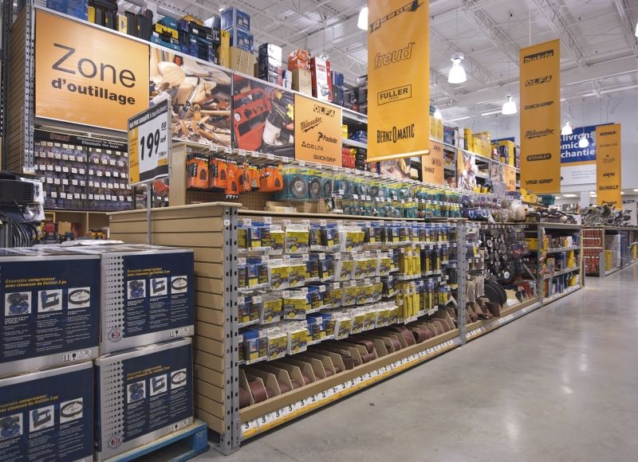

Hi! I am an experienced Product developer and Technology consultant with a demonstrated history of working in finance and supply chain industry.
I also hold a Masters degree in Information Systems Management with a focus on data analytics from Carnegie Mellon.
I enjoy developing data-driven products that solve customer problems.
Things I Can Do
- Data Analytics
- Full stack web development
- Drive product development team
- Project Management
- Stakeholder Management
- Drink much coffee
Projects
Credit Risk Modeling
- Built a predictive model to determine the creditworthiness of a borrower based on their profile and loan characteristics.
- Used Cross Validation and AUC score to determine best fit predictive model out of Logistic Regression, Naive Bayes, and Decision Tree.
Ad Filter
- Built an ad filter that blocks advertisement images from web browser users while filtering minimal user relevant images.
- 96.6% accuracy rate : Accurately able to classify 3167 images
out of 3279 images as ad or non ad.
Seattle Crime Analysis
- Identified crimes which may co-occur using Association rules.
- Developed a decision tree model to determine the top factors responsible for the occurrence of crime.

In-store assortment optimization
- Developed a model/framework to solve in-store assortment optimization problem.
- Generated growth rates of SKUs using logarithmic model and Regression to gain insight
into their relative performance.